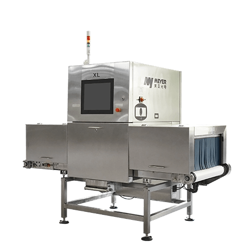

X光产品线-技术支持
X光产品线-技术支持

MY8060-80XS简介
外型尺寸: 2650mm×1442mm×2350mm±30
整机重量: 800kg
皮带宽度: 600mm ，喷阀数：80个， 受检品尺寸：宽度≤588mm 高度≤35mm
设备特色: 散料X光机，在检测精度不降低的情况下，同比60XS产量提升30%左右
射源品牌: 自制射源寿命一般在8000～10000个小时
产量参考: （1）常规物料类～大米约8～10吨/小时，黄豆约6-7吨/小时，花生约5～6吨/小时，南瓜籽约4吨/小时，葵花籽约2.5～3吨/小时
（2）坚果类～巴旦木约1 ～1.5吨/小时左右，核桃约1～1.5吨/小时，夏威夷果约1.2～1.7吨/小时，碧根果约在1.2～1.7吨/小时。
（3）工业品类～PET瓶片1～1.5吨/小时。
巴旦木剔除演示视频
 MY8045-60XS简介
MY8045-60XS简介
外型尺寸: 3080mm×1120mm×2450mm±30
整机重量: 700kg
皮带宽度: 470mm ，喷阀数：60个 ，受检品尺寸：宽度≤460mm 高度≤20mm
设备特色: 散料X光机，在检测精度不降低的情况下，同比S1产量提升30%左右
射源品牌: 自制射源寿命一般在8000～10000个小时
产量参考: （1）脱水蔬菜类～脱水胡萝卜约2吨/小时左右，脱水青红椒约1.2吨/小时左右。
（2）茶叶类～龙井茶约200公斤/小时左右，武夷山岩茶约600～800公斤/小时左右，铁观音茶约1吨/小时左右，绿茶约在1~1.5吨/小时左右。
（3）籽仁干果类～葡萄干约2吨～3吨/小时左右，南瓜籽约2.5～3吨/小时左右，花椒约800～1200公斤/小时左右。
演示视频正在制作中······
MY8045-XM简介
外型尺寸: 1150mm×945mm×2070mm±30
整机重量: 350kg
皮带宽度: 450mm ，受检品尺寸：宽度≤400mm 高度≤200mm
设备特色: 包装类X光机，配备5种剔除机构的选配:
射源品牌: 自制射源寿命一般在8000～10000个小时
翻板剔除装置演示视频
摆臂剔除装置演示视频
MY12060-XL简介
外型尺寸: 2250mm×1380mm×2110mm±30
整机重量: 700kg
皮带宽度: 600mm ，受检品尺寸：宽度≤570mm 高度≤300mm
设备特色: 大尺寸包装X光机，配备2种剔除机构的选配:
射源品牌: 伟杰射源
演示视频正在制作中······
MY12015D-XL简介
外型尺寸: 5000mm×1460mm×1980mm±30
整机重量: 900kg
输送线宽度: 150mm ，受检品尺寸：直径≤150mm 高度≤250mm
设备特色: 罐装机，精准识别异物并使用气缸装置剔除含有恶性杂质的罐头
射源品牌: 伟杰射源
产量参考: （1）铝制瓶装银鹭八宝粥 （2）玻璃瓶装辣椒酱
（2）玻璃瓶装辣椒酱 （3）铁罐装奶粉
（3）铁罐装奶粉
输送线速度28米/分钟约120～160瓶/分钟
输送线速度28米/分钟约120～160瓶/分钟 输送线速度20米/分钟约60～80瓶
输送线速度40米/分钟约160～200瓶/分钟
输送线速度40米/分钟约160～200瓶/分钟
演示视频正在制作中······

| ©2019 X光产品线 (仅供公司内部员工使用，请勿外传！如对网站有意见或建议，可企业微信联系丁剑）